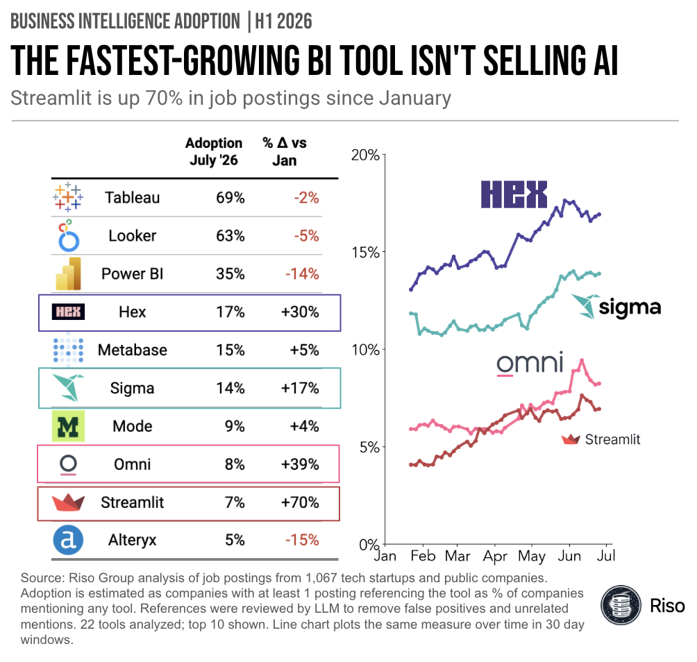

Top 10 BI Tools by Adoption: July 2026

Key Takeaways
- Streamlit grew fastest of any top 10 tool, up 70% since January to 7% adoption, and it’s the only fast grower not marketing AI
- Omni (+39%) and Hex (+30%) also climbed sharply. Hex is now the #4 tool overall at 17%, passing Metabase
- Every incumbent slipped: Power BI -14%, Looker -5%, Tableau -2%. Tableau (69%) and Looker (63%) still lead by a wide margin
Spot the odd one out
In the first half of 2026, four of the top BI tools grew fast, and one is not like the others. Just look at their website taglines:
- Hex and Omni: “The AI Analytics Platform” (really, both say it)
- Sigma: “AI Runtime for Business”
- Streamlit: “A Faster Way to Build and Share Data Apps”
Did you catch it? That last one is growing the fastest, up 70% in mentions since January, and it isn’t pushing A.I.
How could that be?
Hex, Sigma, and Omni handle traditional BI SaaS (pretty charts, access permissions) and are baking AI into their products. Demand for that is plentiful.
Streamlit is different. It isn’t growing because it sells you AI to analyze your data. It’s growing because AI agents already know how to work with data and churn out Streamlit dashboards (it’s Python), like they do websites and other apps.
Token resellers vs. bring-your-own tokens.
What to watch
Streamlit, owned by Snowflake, shows up as a complement to other BI tools with more technical users today. But that could change. We may see a push/pull between:
- Agents from the frontier labs getting more capable, pushing adoption toward Streamlit and bespoke data apps, and bring-your-own tokens to analytics
- Application companies (Hex, Sigma, Omni) beating general agents on analytics tasks, pulling adoption back to BI SaaS
Methodology
Riso Group analysis of job postings from 1,067 tech startups and public companies, tracked from January through July 2026. Adoption is estimated as companies with at least one posting referencing the tool, as a % of companies mentioning any tool. References were reviewed by LLM to remove false positives and unrelated mentions. 22 tools analyzed, top 10 shown. The line chart plots the same measure over time in 30 day windows. Job postings are a proxy for adoption, not a license count, so read the direction and relative magnitude rather than the absolute level.